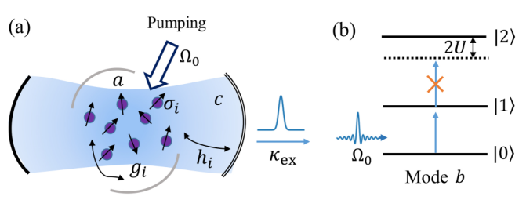
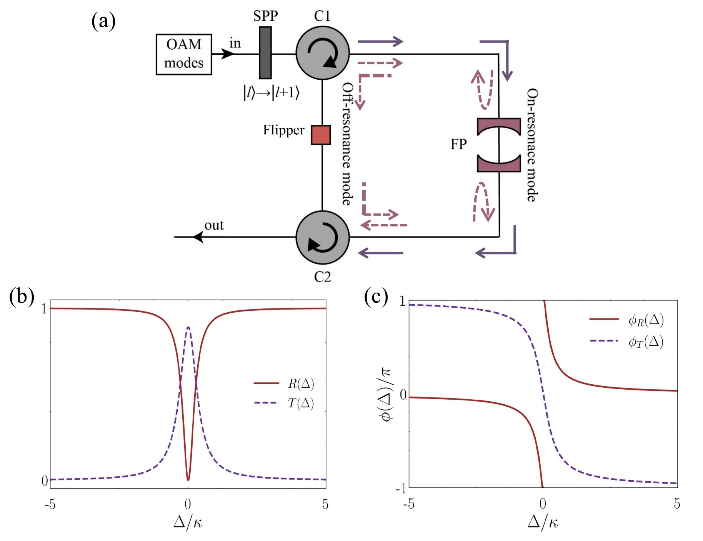
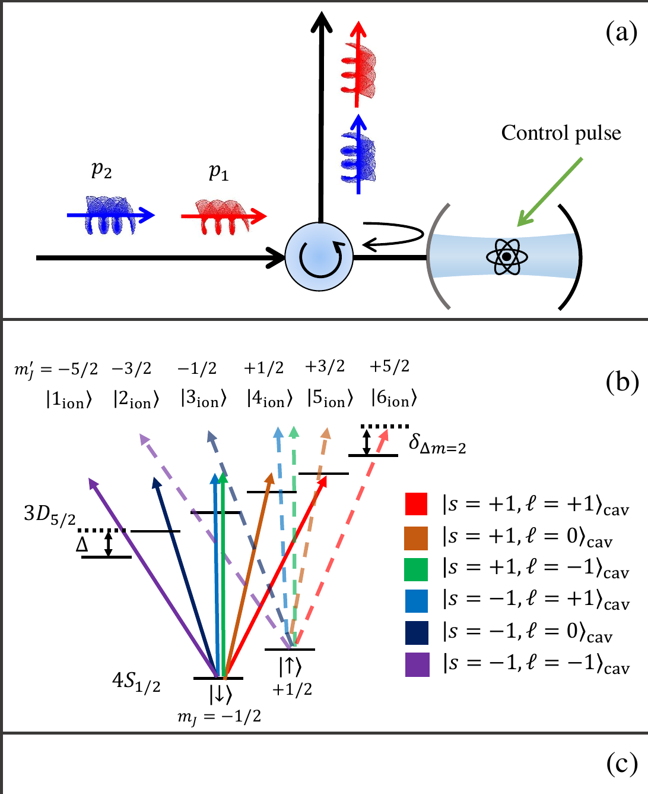
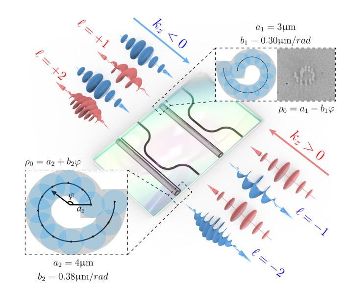
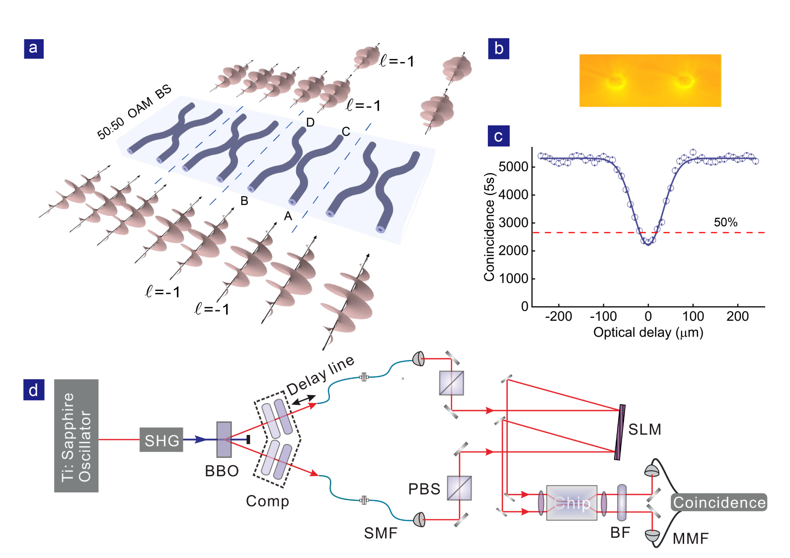
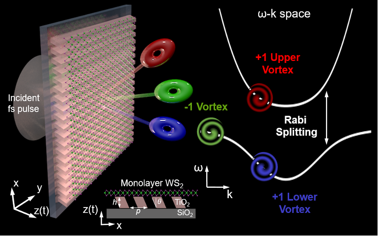
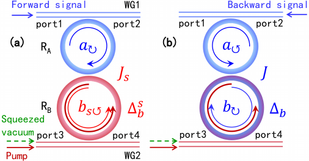
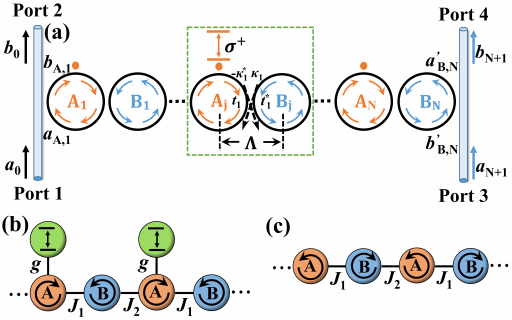
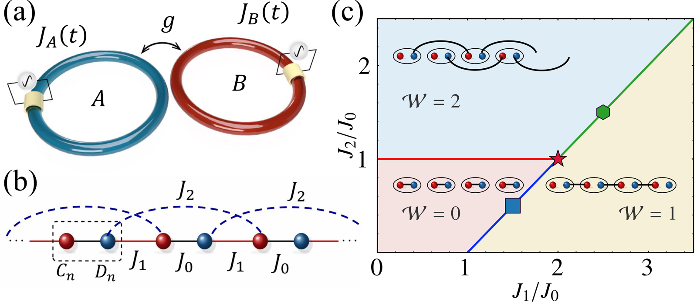

</> Where I've Been
A timeline of my academic journey so far.
Postdoctoral Researcher
RIKEN, Theoretical Quantum Physics Laboratory, Wako, Japan
Working on critical topological photonics in synthetic-frequency dimensions and chiral light–matter interactions.
Visiting Scholar
RIKEN, Theoretical Quantum Physics Laboratory, Wako, Japan
Hosted by Prof. Franco Nori. Discussions on chiral quantum optics and OAM-based quantum information processing; delivered an oral seminar on high-dimensional photonic quantum gates.
Research Fellow (Secondment)
Zhuhai Municipal Development and Reform Commission, Zhuhai, China
A temporary secondment program for early-career researchers: literature review, data analysis, and research memos on regional industrial policy. (A brief detour from photons into policy!)
Ph.D. in Optical Engineering
Nanjing University, College of Engineering and Applied Sciences
Supervisor: Prof. Keyu Xia. Research on chiral quantum optics and OAM-based high-dimensional quantum information processing.
B.S. in Physics
Nanjing University, Nanjing, China
GPA 4.45/5.00. Advanced Statistical Mechanics 100/100, Quantum Optics 96/100, Solid-State Physics 95/100.
Academic Service
Invited referee for Nature Communications, Physical Review Letters, Physical Review A, and Physical Review B — 10+ completed reviews.
Toolbox
Python · MATLAB · Julia · QuTiP · DMRG / tensor networks · FDTD · COMSOL
⌬ What I Do
Three intertwined directions — click any card to read the paper.
01 High-Dimensional Quantum Information Tasks
Qubits are great, but photons can do better: a single photon's orbital angular momentum (OAM) spans an unbounded Hilbert space. I design gates, sources, and on-chip devices that process quantum information in dimensions far beyond two.

Photon blockade and single-photon generation with multiple quantum emitters
Tens of quantum emitters — usually fatal for single-photon purity — are turned into a two-level "superatom" via cavity-induced dipole–dipole interactions, yielding single photons with purity and yield both above 90%.
Phys. Rev. Res. 4, 033083 (2022) →
Scalable cyclic transformation of orbital angular momentum modes
A high-dimensional single-photon cyclic gate built from a nonreciprocal Mach–Zehnder interferometer and Fabry–Pérot cavities — scalable to hundreds of dimensions without losing fidelity, demonstrated up to dimension six.
Photonics Res. 12, 2249 (2024) →
High-dimensional two-photon quantum controlled phase-flip gate
The first deterministic four-dimensional two-photon gate, using electric-quadrupole coupling between photons and calcium ions — fidelity above 98.4% even with photon scattering and wavepacket distortion.
Phys. Rev. Res. 6, 033004 (2024) →
Locking orbital angular momentum with linear momentum of light
A chiral optical waveguide with an Archimedean cross section induces an orbit–orbit interaction that locks OAM to the propagation direction — enabling deterministic, on-demand generation of chiral OAM vortex beams on a chip.
Phys. Rev. Lett. 135, 143802 (2025) →
High-dimensional Hong–Ou–Mandel interference of twisted photons in a photonic chip
On-chip 2D/3D/4D HOM interference with OAM modes in a single compact laser-written device — visibilities up to 88.3%, OAM entanglement with F ≈ 92%, and CHSH violation beyond 11σ. No cascaded beam splitters needed.
Photonics Res., accepted →02 Structured Light Meets Matter
Light can be structured in space and time — and when such structured light meets a material's intrinsic excitations, new hybrid quasiparticles emerge. Spatiotemporal optical vortices carrying transverse OAM are my current playground.

Exciton-mediated generation and control of spatiotemporal optical vortices
An exciton-mediated route to generate and control spatiotemporal optical vortices (STOVs) in a monolayer-WS₂-integrated slanted nanograting — hybrid STOV–exciton polaritons open an ultra-thin platform for controllable spatiotemporal light–matter interactions.
Manuscript in preparation →03 Topological and Chiral Quantum Optics
Topology makes photonics robust: edge states that refuse to backscatter, bands that flow one way. I look for magnetic-free routes to topological and nonreciprocal light — and, most recently, for topology that survives at criticality.

Quantum squeezing induced optical nonreciprocity
Directional quantum squeezing in coupled χ(2) resonators breaks time-reversal symmetry without magnets: optical diodes and circulators with isolation above 40 dB and insertion loss below 1 dB, plus a nonreciprocal optical transistor.
Phys. Rev. Lett. 128, 083604 (2022) →
Nonreciprocal single-photon band structure
A coupled-resonator optical waveguide chirally coupled to quantum emitters supports nonreciprocal single-photon bands — edge states and flat bands without magnetic fields — enabling frequency-multiplexed single-photon circulators with fidelity above 98%.
Phys. Rev. Lett. 128, 203602 (2022) →
Critical topological photonics in synthetic dimensions
Topology needs a spectral gap; criticality closes it — yet the two can coexist. We identify critical topological photonic states in synthetic-frequency lattices via midgap entanglement-spectrum degeneracies, and uncover a topology-enforced multicritical point.
arXiv:2608.21791 (2026) →¶ Publications
Full and up-to-date list on Google Scholar. † = co-first author · * = corresponding author
First & Co-first Author
- 2026 M. Chen, Y. Jing, F. Nori*, X.-J. Yu*, "Critical topological photonics in synthetic dimensions," arXiv:2608.21791 (2026). arXiv
- 2026 H. Wang†, M. Chen†, Y. Chen*, Y. Fang, J. Gao, W. Zhou, Z. Zhang, Y. Fu, Z. Jiao, X. Wang, R. Ren, Z. Li, J. Dou, K. Xia*, X. Jin*, "High-dimensional Hong–Ou–Mandel interference of twisted photons in a photonic chip," Photonics Res., accepted.
- 2025 H. Wang†, Y. Chen†, M. Chen†, Y. Fang, C. Qiu*, Y. Lu*, K. Xia*, X. Jin*, "Locking orbital angular momentum with linear momentum of light," Phys. Rev. Lett. 135, 143802 (2025). DOI
- 2024 M. Chen, J. Tang, M. Cai, Y. Lu*, F. Nori*, K. Xia*, "High-dimensional two-photon quantum controlled phase-flip gate," Phys. Rev. Res. 6, 033004 (2024). DOI
- 2024 Y. Yang†, M. Chen†, F. Li, Y. Ruan, Z. Li, M. Xiao, H. Zhang*, K. Xia*, "Scalable cyclic transformation of orbital angular momentum modes based on a nonreciprocal Mach–Zehnder interferometer," Photonics Res. 12, 2249–2256 (2024). DOI · arXiv
- 2022 M. Chen, J. Tang, L. Tang, H. Wu, K. Xia*, "Photon blockade and single-photon generation with multiple quantum emitters," Phys. Rev. Res. 4, 033083 (2022). DOI
Co-author
- 2025 M. Cai, M. Chen, J. Tang, K. Xia*, "Photonic indistinguishability characterization and optimization for cavity-based single-photon source," Mach. Learn.: Sci. Technol. 6, 035026 (2025). DOI · arXiv
- 2024 M. Cai, J. Tang, M. Chen, K. Xia*, "Nonreciprocal PT-symmetric phase transition in a non-Hermitian chiral quantum optical system," arXiv:2404.12860 (2024). arXiv
- 2024 H. Wu, J. Tang, M. Chen, M. Xiao, Y. Lu, K. Xia, F. Nori, "Passive magnetic-free broadband optical isolator based on unidirectional self-induced transparency," Opt. Express 32, 11010–11021 (2024). DOI
- 2024 Z. Li, D. Zhu, J. Tang, M. Chen, Y. Ruan, J. Liu, H. Zhang, P. Chen, K. Xia*, L. Zhang*, Y. Lu*, "Quantum ghost imaging of a vector field," Opt. Express 32, 5898–5907 (2024). DOI
- 2023 M. Cai, Z. Li, H. Wu, Y. Ruan, L. Tang, J. Tang, M. Chen, H. Zhang, K. Xia*, M. Xiao, Y. Lu, "Surpassing the standard quantum limit of optical imaging via deep learning," Chin. Opt. Lett. 21, 082701 (2023). DOI
- 2022 J. Tang, W. Nie, L. Tang, M. Chen, X. Su, Y. Lu, F. Nori, K. Xia, "Nonreciprocal single-photon band structure," Phys. Rev. Lett. 128, 203602 (2022). DOI
- 2022 L. Tang, J. Tang, M. Chen, F. Nori, M. Xiao, K. Xia*, "Quantum squeezing induced optical nonreciprocity," Phys. Rev. Lett. 128, 083604 (2022). DOI · arXiv
@ Say Hi
Academic discussions and potential collaborations are always welcome!
mingyuan.chen0812 [at] gmail.com
click to copyGoogle Scholar
Mingyuan Chen
citations & papersOffice
RIKEN, Wako,
Saitama, Japan